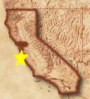

|
| 
|
» Past Events in and around Silicon Valley: 2004 «
2003 Atheist Awards, by Dave Kong, California State Director for American Atheists
Michelle Wright of San Diego - Pioneer Atheist
Jeff Archer of San Diego - Pioneer Atheist
Joe Mercado - Affiliated Group Volunteer of the Year
David Fitzgerald, Katie H - Special Events Award
Bea Duncan, Ann Rojas - Special Events Award
Stuart Bechman - Voice of Reason & Ventura County Cross
Sid Kass - Sponsor, The Atheist Viewpoint TV Show
Jim Heldberg - Distinguished Service Award
Wednesday, Dec. 8, 2004, 7:30 pm - Pot Luck and Human Light Festival,
in Mtn. View
People brought their favorite food dishes, and joined us in celebrating the those who have lit up our lives and our world.
Wednesday, Nov. 17, 2004, 7:30 pm - Practice NOT Holding Your Tongue,
a pre-Thanksgiving (& Winter Solstice) warmup session
We spent some time sharing horror stories and getting stuff off our chest. Then we learned effective
communication techniques and practiced responding to outrageous relatives! Chris ran it based on
Garrison-Martineau techniques.
Wednesday, Nov. 10, 2004, 7:30 pm - Game: "An Atheist's Cranium"
This is a cross between pictionary, charades and something else. It was great fun! Many thanks to Chris
for inventing the game, putting together the list of options, and printing the Atheist money.
Wednesday, Oct. 27, 2004, 7:30 pm in Mtn. View
- "Free Will vs. Determinism: Is Free Will the 'god' of the Atheists?"
by Thomas Crawford
While Atheists will steadfastly deny the existence of an all-powerful supernatural entity living in the sky or
among them, many believe in an equivalent that resides in their heads. This presentation offered
the determinist position that, while consistent with scientific and logical methods, is often vehemently
rejected by almost everyone, Atheist and religious alike.
Thomas was the vice-president of the San Diego Atheist Coalition before moving up to San Jose last year.
He gave this talk to the San Diego group and a stimulating debate followed. He has a PhD in clinical
psychology from the University of Connecticut and is a child psychologist with Kaiser Permanente. Thomas will
use examples from research findings in developmental psychopathology to support his claim that we are what our
parents and the world make us and will make us."
Wednesday, Sept. 22, 2004, 7:30 pm in Mtn. View - Diane Wilson spoke about her life and her book
Awakening of a Jehovah's Witness: Escape From the Watchtower Society
ONE OF THE SEASON'S MOST PSYCHOLOGICALLY ASTUTE BOOKS
Who are those polite, well-scrubbed Jehovah's Witnesses who appear at our doors to hand out leaflets and offer
to discuss the Bible? Diane Wilson, made vulnerable by a childhood of psychological abuse, succumbed to the
group's charms and remained a member for 25 years. Wilson describes the indoctrination process, the hypocrisy,
and the gradual suppression of individuality. Much of what she describes might be said of any cult, and members
of mainstream religions may come to see the dangers of fanaticism in their own faiths.
Psychology Today, December 2002
Wednesday, Sept. 8, 2004, 7:30 pm - Social Meeting in Mtn. View: Pet Peeves & Popcorn
We complained about religion, government, politics, and more.
Saturday, Aug. 28, 2004, 6 pm - San Francisco Atheists:
The Problem with Cyberspiritualism
by Annalee Newitz
Culture editor for SF Guardian and SJ Metro, and nationally known author and lecturer on Technology, Culture andxSex.
Author of recent SF Weekly articlexFuck GodLocation:
Elephant and Castle English pub
424 Clay @ Battery
SF
Wednesday, Aug. 25, 2004, 7:30 pm in Mtn. View - ** Fahrenheit 9/11 **
We had a large crowd for this political documentary and commentary. As could be expected, it generated a lot of discussion afterward.
Wednesday, Aug. 11, 2004, 7:30 pm in Mtn. View - Comedy nite: Creationist Video
Dr. Dino (Kent Hovind) tries to make evolutionists look stupid, and ends up doing it to himself. We found out that it's not that funny, but quite irritating.
Wednesday, July 28, 2004, 7:30 pm in Mtn. View - Taped Debate on "Does God Exist?"
We watched the initial statements in the debate between:
Eddie Tabash, a noted Atheist debator
and
Richard Swinburne, one of the top Christian apologists in the world (and quite boring).
Wednesday, July 14, 2004, 7:30 pm in Mtn. View - Science's Greatest Unsolved Mysteries
Hal Massie talked about some of what science has yet to understand.
Wednesday, June 23, 2004, 7:30 pm, in Mtn. View - Penn & Teller
We watched more video episodes from Penn & Teller's HBO show "Bullshit"
Sunday, June 20, 2004, 11 am - 3 pm: Bay Area Atheists annual Summer Solstice Picnic in Golden Gate Park
We enjoyed a Lazy, Hazy, Crazy Summer Solstice Celebration. Fun included the Infamous Bible Toss, Blasphemy!
game, and other assorted wackiness. Ed even took some pictures.
Tuesday, June 15, 2004, in San Francisco
* * * Pledge Rally After Newdow Ruling * * *
After the 6/14/04 Supreme Court ruling on Mike Newdow's "under god" case, about local 20 Atheists
rallied the next morning at the Ninth Circuit Court of Appeals, 7th & Mission.
KRON channel 4 covered us.
Wednesday, June 9, 2004, 7:30 pm, in Mtn. View - Penn & Teller
Video episodes from Penn & Teller's HBO show "Bullshit"
Wednesday, May 26, 2004, 7:30 pm, in Mtn. View - Positive Psychology:
How To Achieve More by Separating the Science of Success from Self-Help Snake Oil
by Dr. Stephen Kraus"Positive psychology" is the scientific study of happy, successful people,
and it's one of the fastest growing fields in psychology. Success scientist
and Harvard Ph.D. Stephen Kraus utilizes this research to offer proven,
practical tools for achieving more, while debunking self-help snake oil and
unmasking self-improvement urban legends. Dr. Kraus has been called a
combination of Tony Robbins and Mr. Spock for his scientific approach to the
psychology of success, and is the author of "Psychological Foundations of
Success: A Harvard-Trained Scientist Separates the Science of Success from
Self-Help Snake Oil."
Thursday, May 13, 2004, 7:30 pm, in Mtn. View - Video of the launch of GAMPAC
GAMPAC is the Godless Americans Political Action Committee. Power in the U.S. comes thru politics, and this
is the way we can get political influence.Thanks to Zon Powers for the video.
Thursday, May 6, 2004, 11:30am - 1:00pm: PROTEST of the National Day of Prayer event at S.J. City Hall
Atheists of Silicon Valley lead a protest against the National Day of Prayer event, as we have for the last three years.
This is a federally-funded annual abuse of the Constitution.
We had signs to hold up, and pamphlets to hand out. There were plenty of xtian highschoolers who get the time off to
come to this, and were at least nominally interested in an alternative view. We helped open their minds.
After all this fun, we retired to the nearby Togo's for food and refreshment.
See Joe Mercado's write-up of the event.
Location:
801 N. 1st St.
San Jose
Wednesday, April 28, 2004, 7:30pm, in Mtn. View -
Mystical Experience for Nonbelievers and its Relation to the Body
by Tony Bober
Wednesday, April 14, 2004, 7:30pm, in Mtn. View - Report on the American Atheists' National Convention
Saturday, April 3, 2004, 3 - 5 pm: EAST BAY ATHEISTS - "The Evolution Controversy"
Glenn Branch, Deputy Director of National Center for Science Education, Inc., was the speaker this month. "Nothing in biology makes sense except in light of evolution," Theodosius Dobzhansky once said. Yet, from the Scopes trial to the January 2004 exclusion of the "e-word" from a proposed set of state science standards in Georgia, opposition to evolution education continues to be strong. Come hear Glenn talk about the motivations, tactics, and prospects of antievolutionism.
Location:
Berkeley's Main Library
2090 Kittredge Street, 3rd floor Meeting Room
(Kittredge/Shattuck near the Downtown Berkeley BART)
Wednesday, March 24, 2004, 11 AM - noon: Rally in Support of the Secular Pledge of Allegiance
Ninth Circuit Court of Appeals
7th and Mission Streets, San Francisco
This was in conjunction with American Atheists' rally on the steps of the Supreme Court that
day to support Michael Newdow as he argued before the court against inclusion of the phrase "under god"
in the Pledge.Featured speakers were:
- Dave Kong, California State Director for American Atheists
- Bobbie Kirkhart, Atheist Alliance, International
- Dave Fitzgerald, San Francisco Atheists
- Larry Hicok, East Bay Atheists
- Mark Thomasx
Atheists of Silicon Valley and Godless Americans PAC
- Ray Westergard, East Bay chapter of Americans United for Separation of Church and State
- Mynga Kutrell, Sacramento Atheists and Other Freethinkers
- Jim Heldberg,
American Atheists National Affiliation Director (leading the crowd in the secular version of the Pledge)
Most importantly, we had people show up and let the world know that this is important to us. We can't change everyone, and we can change ourselves by participating.
Here is what Larry Hicok wrote:
In the 1960's Madalyn Murray won a historic Supreme Court ruling against prayer in public schools. It appeared that the hypocrisy surrounding government support of religion was on the way out.
Today the exact opposite is happening. Our beloved President's father has said that Atheists should not be considered citizens. His record in office is far more secular than his son's. Atheists are compelled to do everything possible to counter the foul stench of government-sponsored fundamentalism that threatens to strip them of their rights.
Newdow's suit against god in the Pledge is possibly the most significant challenge to this cancer since Madalyn's historic suit. It challenges an addition to the Pledge that happened in the days of McCarthyism, when the concepts underlying our Constitution were least respected. It strikes at the very roots of "Ceremonial Deism" that the courts have hidden behind to rationalize the god nonsense in government.
We must act. Please join us.
AP Photo Pictures of the San Francisco rally:
Sid Kass & John Messina
Deanna Stewart and others
lMark Thomas, David Mandell, and others
Jim Heldberg of San Francisco Atheists
Saturday, March 20, 2004, 5-8 pm: Aloha Potluck & Game Night in Mtn. View
We put on our Hawaiian shirts or sun dresses and celebrated the first day of spring (the Vernal Equinox) with the godless!
Wednesday, March 10, 2004, 7:30 pm: Video: HELL HOUSE
Documentary
Every October since 1990, the Pentecostal Assemblies of God Church in Cedar Hill, Texas, has created, constructed
and scripted a large, elaborate haunted house, open to the public. But Hell House is not the usual collection of
ghosts and goblins; rather, it exposes visitors to the apparent evils of the real world and then offers a chance
for salvation. George Ratliff's eye-opening documentary chronicles the organization of one Hell House from
brainstorming sessions, through auditions for high-school actors (with female students vying for roles as repentant
abortion seekers) to the presentation of the vignettes - in which a naive raver is drugged and raped, a gay man is
sentenced to eternity in Hell and a classroom is the venue for a bloody massacre. Treating his subject delicately,
showing respect for his subjects and maintaining an air of objectivity, Ratliff presents a congregation of essentially regular people earnestly attempting to increase church attendance through fear. Winner of the Golden Gate Award at the 2002 San Francisco International Film Festival. TV14 (AC, AL, V) () Color (86 mins)
There was also be a 10 minute taped interview with Michael Newdow, who is challenging "under God" in the pledge of allegiance.
Thanks to Zon Powers.
Wednesday, Feb. 25, 2004 - 7:30 PM, in Mtn. View - "Certainty is not Necessary" by John Osborn
John told us of his 50 years of intellectual insecurity, and his cure.
Wednesday, Jan. 28, 2004 - 7:30 PM, in Mtn. View - Atheist Charades
Many thanks to Lydia for a really fun time. Abstract ideas that permeate Atheism can be hard to describe without words, but we usually managed to keep everyone laughing.
Wednesday, Jan. 14, 2004 - 7:30 PM, in Mtn. View - Atheist Video Nite
We watched a video of Barry Lynn, of Americans United for Separation of Church & State, talking about the religious right.Thanks to David Mandell for the video.
>>> Past Events of 2003 <<<
» back to top of page «
{kind=link}
{kind=link}
{kind=link}
{kind=link}